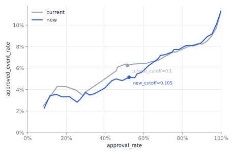

信贷策略#
评分卡对申请人排序，信贷策略决定通过哪些申请人。kivi.strategy 支撑随后的决策：cutoff_table() 显示每个候选截断点通过哪些申请人、放进多少坏结果，swap_set() 比较现行评分与新评分的决策，expected_loss() 和 expected_loss_table() 将 PD、LGD 和敞口转换为每个申请人和每个等级的预期损失。
信贷策略位于 校准 之后（后者给出 PD 和等级），位于把模型带入生产的 分箱方案 之前。
评分方向与通过规则#
与 模型表现 相同，所有评分都是风险越高、评分越高，例如 PD。评分不高于截断点的申请人予以通过，因此截断点越高，通过的申请人越多。等于截断点的评分予以通过，所以相同评分总是得到相同的决策。
评分卡分数方向相反：通过 600 分及以上的策略，等于通过取负分数不超过 -600 的申请人。请传入 -points 和取负后的截断点，例如 cutoff_table(-points, target, cutoffs=[-620, -600, -580]) 。
两张评分卡的 PD#
本页示例使用内置的银行数据。该数据记录的是营销响应而非违约，因此与 评分卡 一样，将目标值 1 视为违约。前 3,000 行为开发样本，其余 1,521 行代表后一时期的申请人。基于 WOE 值的两个逻辑回归分别给出现行评分卡（四个变量）和新评分卡（增加 loan 和 marital ）的 PD：
>>> import numpy as np
>>> import pandas as pd
>>> from kivi.datasets import load_bank
>>> from kivi.selection import logistic_regression
>>> from kivi.woe import woe_table, woe_transform
>>> data = load_bank()
>>> development, applicants = data.iloc[:3000], data.iloc[3000:]
>>> def to_groups(frame):
... groups = frame[["poutcome", "contact", "housing", "loan", "marital"]].copy()
... groups["age"] = pd.cut(frame["age"], [-np.inf, 25, 35, 45, 55, 65, np.inf])
... return groups
>>> dev_groups = to_groups(development)
>>> tables = {
... column: woe_table(dev_groups[column], development["target"]) for column in dev_groups
... }
>>> def to_woe(frame, columns):
... groups = to_groups(frame)
... return pd.DataFrame(
... {column: woe_transform(groups[column], tables[column]) for column in columns}
... )
>>> def fit_pd(columns):
... fit = logistic_regression(to_woe(development, columns), development["target"])
... coefficients = fit["coef"]
... def predict(frame):
... log_odds = coefficients["intercept"] + to_woe(frame, columns) @ coefficients[columns]
... return 1 / (1 + np.exp(-log_odds))
... return predict
>>> four = ["poutcome", "contact", "housing", "age"]
>>> current = fit_pd(four)(applicants)
>>> new = fit_pd([*four, "loan", "marital"])(applicants)
>>> y = applicants["target"]
新评分卡对申请人的排序略好一些：
>>> from kivi.metrics import roc_auc
>>> [round(roc_auc(current, y), 3), round(roc_auc(new, y), 3)]
[0.718, 0.73]
选择截断点#
cutoff_table() 接收候选截断点，并对每个截断点报告通过客群以及被拒绝的部分。PD 为 1 的截断点通过所有人，给出参照行：
>>> from kivi.strategy import cutoff_table
>>> cutoffs = [0.05, 0.08, 0.1, 0.15, 0.2, 1]
>>> table = cutoff_table(current, y, cutoffs=cutoffs)
>>> table[["approved", "approval_rate", "approved_event", "approved_event_rate"]].round(3)
approved approval_rate approved_event approved_event_rate
cutoff
0.05 328 0.216 13 0.040
0.08 562 0.369 26 0.046
0.10 784 0.515 49 0.062
0.15 1329 0.874 110 0.083
0.20 1410 0.927 120 0.085
1.00 1521 1.000 173 0.114
>>> table[["rejected_event_share", "rejected_non_event_share"]].round(3)
rejected_event_share rejected_non_event_share
cutoff
0.05 0.925 0.766
0.08 0.850 0.602
0.10 0.717 0.455
0.15 0.364 0.096
0.20 0.306 0.043
1.00 0.000 0.000
每一行都是一种可能的策略。截断点 0.10 通过 1,521 名申请人中的 784 名，即 51.5%，其坏账率为 6.25%，约为全部申请人 11.4% 的一半。它避开了 71.7% 的坏结果，但也拒绝了 45.5% 的好申请人。将截断点提高到 0.15，通过率为 87.4%，坏账率为 8.3%：放款机构获得了更多业务量，也承担了更多风险。选择哪一行是业务决策，表中给出了每种选择的代价。
列 |
含义 |
|---|---|
|
评分不高于截断点的申请人数。 |
|
截断点通过的申请人占全部申请人的比例。 |
|
通过的申请人中的事件数及其比率，即通过客群的坏账率。 |
|
评分高于截断点的事件占全部事件的比例，即该截断点避开的坏结果。 |
|
评分高于截断点的非事件占全部非事件的比例，即该截断点放弃的好业务。 |
|
传入 |
通过客群的坏账率是对所有通过者的平均。评判截断点本身，更适合看边际坏账率，即提高截断点后新增申请人的坏账率：
>>> marginal = np.diff(table["approved_event"], prepend=0) / np.diff(table["approved"], prepend=0)
>>> marginal.round(3)
array([0.04 , 0.056, 0.104, 0.112, 0.123, 0.477])
假设一笔好贷款赚取利润 \(m\)，一笔坏贷款损失 \(L\)。坏账率为 \(b\) 的一组申请人带来 \((1 - b)\,m - b L\) 的收益，当 \(b < m / (m + L)\) 时为正。利润为 1、损失为 10 时，盈亏平衡坏账率为 \(1/11 \approx 9.1\%\)。PD 在 0.05 到 0.08 之间的申请人违约率为 5.6%，能够覆盖自身的损失；而 0.08 到 0.10 之间的申请人违约率为 10.4%，无法覆盖，因此在这些截断点中 0.08 的利润最高。对于校准良好的 PD，盈亏平衡坏账率本身就是 PD 截断点；边际坏账率则用实际结果对其加以检验。
整数 cutoffs 将截断点放在 bin_edges() 的分位数边界上，使各行大约通过五分之一、五分之二……的申请人。相同评分会使各级的位置偏移，因为评分相同的申请人总是得到相同的决策：
>>> cutoff_table(current, y, cutoffs=5)[["approved", "approval_rate", "approved_event_rate"]].round(3)
approved approval_rate approved_event_rate
cutoff
0.043558 305 0.201 0.043
0.087036 696 0.458 0.057
0.120298 931 0.612 0.064
0.133431 1255 0.825 0.080
inf 1521 1.000 0.114
交换集#
新评分会改变部分申请人的决策。在两个评分各自的截断点上，swap_set() 将申请人分为四组：两个评分都通过的、只有现行评分通过的换出（swap-out）、只有新评分通过的换入（swap-in），以及两个评分都拒绝的。为了在相同通过率下比较两个评分，给新评分设定一个截断点，使其通过的申请人数与现行截断点 0.10 相同：
>>> from kivi.strategy import swap_set
>>> approved = int((current <= 0.1).sum())
>>> new_cutoff = float(np.sort(new)[approved - 1])
>>> swaps = swap_set(current, new, y, current_cutoff=0.1, new_cutoff=new_cutoff)
>>> swaps.round(3)
total share known event event_rate
current new
approve approve 679 0.446 679 33 0.049
decline 105 0.069 105 16 0.152
decline approve 118 0.078 118 8 0.068
decline 619 0.407 619 116 0.187
新评分换出 105 名坏账率为 15.2% 的申请人，换入 118 名坏账率为 6.8% 的申请人。由于存在相同评分，其截断点通过 797 名申请人，比现行截断点多 13 名，通过客群的坏账率从 6.25% 降至 5.1%：
>>> cutoff_table(new, y, cutoffs=[new_cutoff])[["approved", "approved_event_rate"]].round(3)
approved approved_event_rate
cutoff
0.105181 797 0.051

各通过率下通过客群的坏账率。通过率约在 65% 以下时，新评分批准的客群坏账率更低；超过这一水平后，两条曲线相距很近，新评分大多略高。图中的点标出交换集所用的截断点。#
当换入优于换出时，新评分才值得采用；两个评分都通过或都拒绝的申请人不受影响。各行的比例给出每个评分的通过率，例如新评分的通过率为 swaps["share"].xs("approve", level="new").sum() 。
实际上，换入申请人的结果是未知的：现行评分拒绝了他们，所以他们从未获得贷款。对结果未知的申请人，在目标值中传入缺失值。他们计入 total 和 share，但不计入 known、event 和 event_rate：
>>> observed = y.where(current <= 0.1)
>>> swap_set(current, new, observed, current_cutoff=0.1, new_cutoff=new_cutoff).round(3)
total share known event event_rate
current new
approve approve 679 0.446 679 33 0.049
decline 105 0.069 105 16 0.152
decline approve 118 0.078 0 0 NaN
decline 619 0.407 0 0 NaN
换出申请人的结果已知，但换入申请人的坏账率缺失，比较也就缺了一半。 拒绝推断 中介绍的拒绝推断，根据被拒申请人的评分和相似的已通过申请人的结果，估计被拒申请人的结果。传入推断得到的标签，或带权重的扩充样本，即可补全该表；但应把结果视为估计值，它取决于推断所依据的假设。
预期损失#
一笔敞口的预期损失是其违约概率、违约损失率与违约风险敞口的乘积：
银行数据中没有贷款金额，因此示例以平均余额作为敞口，负余额记为零，所有申请人的 LGD 均取 45%。expected_loss() 的 LGD 和 EAD 可以是一个值，也可以每个申请人一个值，并保留 Series 的索引：
>>> from kivi.strategy import expected_loss
>>> ead = applicants["balance"].clip(lower=0)
>>> el = expected_loss(new, 0.45, ead)
>>> el.head(3).round(2)
3000 17.38
3001 0.00
3002 181.98
dtype: float64
将预期损失作为 loss 传给 cutoff_table()，即可加入通过客群的预期损失：
>>> table = cutoff_table(new, y, cutoffs=cutoffs, loss=el)
>>> table.assign(loss_per_approved=table["approved_loss"] / table["approved"])[
... ["approval_rate", "approved_event_rate", "approved_loss", "loss_per_approved"]
... ].round(3)
approval_rate approved_event_rate approved_loss loss_per_approved
cutoff
0.05 0.189 0.031 5824.612 20.295
0.08 0.462 0.050 24451.010 34.830
0.10 0.494 0.049 26478.520 35.258
0.15 0.763 0.078 63693.305 54.861
0.20 0.910 0.085 89103.859 64.381
1.00 1.000 0.114 125487.469 82.503
通过所有人时，预期损失为 125,487，即每名申请人 82.50。截断点 0.10 通过一半申请人，预期损失却只有其五分之一，即每名通过的申请人 35.26。approved_loss 对作为 loss 传入的任何金额求和：传入实际损失，可看到每个截断点放进来的损失，它与最后一行之差就是该截断点避开的损失；传入敞口，可看到它通过的业务量。
按等级的预期损失#
expected_loss_table() 汇总每个等级或其他分组的敞口和预期损失。与 校准 一样，按主标尺的边界切分新评分的 PD：
>>> from kivi.strategy import expected_loss_table
>>> pd_edges = [0, 0.05, 0.08, 0.12, 0.2, 0.4, 1]
>>> grades = pd.cut(new, pd_edges, labels=list("ABCDEF"), include_lowest=True)
>>> by_grade = expected_loss_table(grades, new, 0.45, ead)
>>> by_grade[["total", "exposure", "expected_loss", "expected_loss_rate"]].round(4)
total exposure expected_loss expected_loss_rate
bin
A 287 352935.0 5824.6120 0.0165
B 415 639860.0 18626.3984 0.0291
C 375 674173.0 33932.5102 0.0503
D 307 434612.0 30720.3387 0.0707
E 92 157964.0 18291.2384 0.1158
F 45 62065.0 18092.3717 0.2915
>>> by_grade["exposure_weighted_probability"].round(4)
bin
A 0.0367
B 0.0647
C 0.1118
D 0.1571
E 0.2573
F 0.6478
Name: exposure_weighted_probability, dtype: float64
预期损失率即预期损失除以敞口，从 A 级的 1.7% 上升到 F 级的 29%。所有人使用同一 LGD 时，它等于 LGD 乘以按敞口加权的 PD；每个申请人有各自的 LGD 时，它还反映了各等级的担保情况。与 calibration_table() 一样，各行按标尺的等级排列，没有申请人的等级不列出。
组合的合计是各列之和，其预期损失率是两个和之比：
>>> total_el = by_grade["expected_loss"].sum()
>>> print(f"EL = {total_el:,.0f}, EL rate = {total_el / by_grade['exposure'].sum():.4f}")
EL = 125,487, EL rate = 0.0541
比较每个等级在敞口中的占比与在预期损失中的占比，可以看出损失集中在哪里：
>>> pd.DataFrame({
... "exposure": by_grade["exposure"] / by_grade["exposure"].sum(),
... "expected_loss": by_grade["expected_loss"] / total_el,
... }).round(3)
exposure expected_loss
bin
A 0.152 0.046
B 0.276 0.148
C 0.290 0.270
D 0.187 0.245
E 0.068 0.146
F 0.027 0.144
E 级和 F 级的敞口不到十分之一，却占预期损失的近 30%。拒绝 F 级（PD 高于 0.4）的策略放弃 2.7% 的敞口，避开 14.4% 的预期损失；否则这些贷款的定价就必须覆盖 29% 的损失率。
样本权重#
cutoff_table()、swap_set() 和 expected_loss_table() 与 kivi.metrics 中的函数一样接受 weights，即每个申请人一个非负权重。计数、敞口和损失都变为加权和，整数权重与重复相应行得到的计数和各项和相同。对 cutoff_table 而言，这只在显式截断点上成立：整数 cutoffs 使用 bin_edges() 的加权分位数，可能与重复行的分位数不同。对于保留全部坏结果、只保留部分好结果的按结果抽样样本，使用其权重即可报告整个总体的通过率和坏账率。